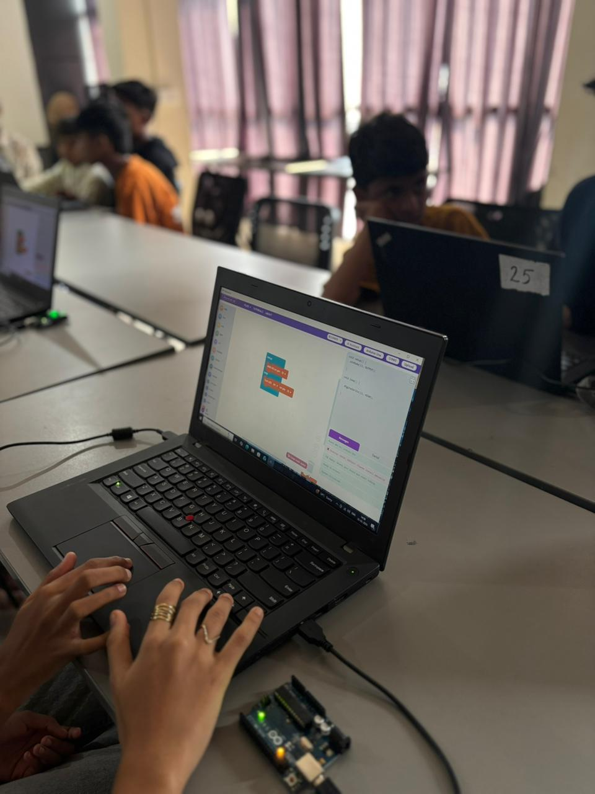
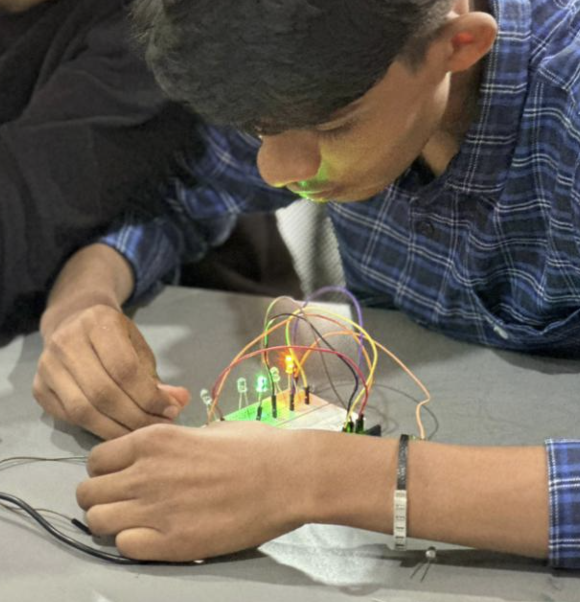
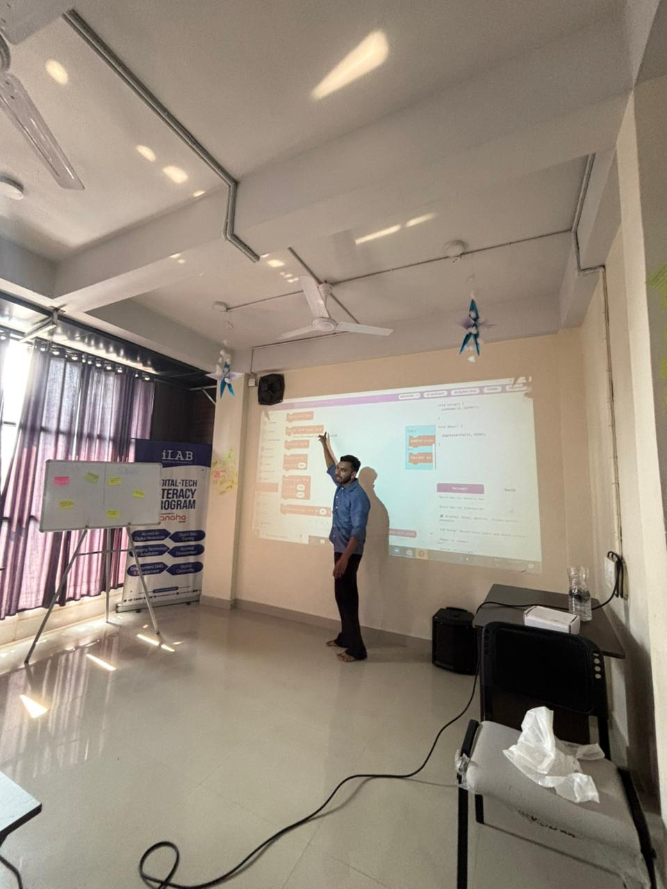

Overview
This session celebrated the globally recognized Arduino Day, connecting our students directly with a worldwide movement of makers, engineers, and creators. For many students, this was their first real exposure to the maker community and the exciting intersection of software and hardware.
During this hands-on workshop, we demystified microcontroller basics by using visual block coding. Students learned how to write logic that interacts directly with physical components, successfully building their first circuits to make LEDs blink and create smooth fading effects using Pulse Width Modulation (PWM). It was an inspiring day that showed them how accessible real-world making can be!
Topics
Introduction to the maker community
Arduino hardware platform basics
Block coding concepts and logic
Pulse Width Modulation (PWM) for LED fading
Activities
Explored global Arduino Day events and projects
Programmed an Arduino to make an LED blink
Used block coding to simplify programming
Built a circuit to create an LED fade effect
Photos



Highlights
- Students felt connected to a worldwide community of makers and innovators.
- Block coding made learning logic and structure accessible for beginners.
- Successfully bridging the gap between software instructions and hardware behavior visually through LEDs.
- Great enthusiasm for continuing with more complex microcontroller projects.